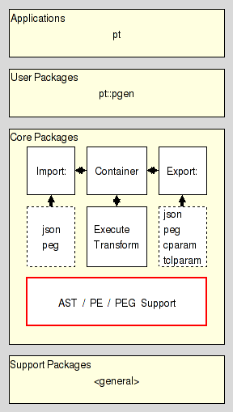

pt::pe - Parsing Expression Serialization
Are you lost ? Do you have trouble understanding this document ? In that case please read the overview provided by the Introduction to Parser Tools. This document is the entrypoint to the whole system the current package is a part of.
This package provides commands to work with the serializations of parsing expressions as managed by the Parser Tools, and specified in section PE serialization format.
This is a supporting package in the Core Layer of Parser Tools.

This command verifies that the content of serial is a valid serialization of a parsing expression and will throw an error if that is not the case. The result of the command is the empty string.
If the argument canonvar is specified it is interpreted as the name of a variable in the calling context. This variable will be written to if and only if serial is a valid regular serialization. Its value will be a boolean, with True indicating that the serialization is not only valid, but also canonical. False will be written for a valid, but non-canonical serialization.
For the specification of serializations see the section PE serialization format.
This command verifies that the content of serial is a valid canonical serialization of a parsing expression and will throw an error if that is not the case. The result of the command is the empty string.
For the specification of canonical serializations see the section PE serialization format.
This command assumes that the content of serial is a valid regular serialization of a parsing expression and will throw an error if that is not the case.
It will then convert the input into the canonical serialization of this parsing expression and return it as its result. If the input is already canonical it will be returned unchanged.
For the specification of regular and canonical serializations see the section PE serialization format.
This command assumes that the argument serial contains a valid serialization of a parsing expression and returns a string containing that PE in a human readable form.
The exact format of this form is not specified and cannot be relied on for parsing or other machine-based activities.
For the specification of serializations see the section PE serialization format.
This command walks the parsing expression pe from the bottom up to the root, invoking the command prefix cmdprefix for each partial expression. This implies that the children of a parsing expression PE are handled before PE.
The command prefix has the signature
I.e. it is invoked with the parsing expression pe the walk is currently at, the op'erator in the pe, and the operator's arguments.
The result returned by the command prefix replaces pe in the parsing expression it was a child of, allowing transformations of the expression tree.
This also means that for all inner parsing expressions the contents of arguments are the results of the command prefix invoked for the children of this inner parsing expression.
This command walks the parsing expression pe from the root down to the leaves, invoking the command prefix cmdprefix for each partial expression. This implies that the children of a parsing expression PE are handled after PE.
The command prefix has the same signature as for bottomup, see above.
The result returned by the command prefix is ignored.
This command tests the two parsing expressions seriala and serialb for structural equality. The result of the command is a boolean value. It will be set to true if the expressions are identical, and false otherwise.
String equality is usable only if we can assume that the two parsing expressions are pure Tcl lists.
This command constructs the atomic parsing expression for epsilon.
This command constructs the atomic parsing expression for dot.
This command constructs the atomic parsing expression for alnum.
This command constructs the atomic parsing expression for alpha.
This command constructs the atomic parsing expression for ascii.
This command constructs the atomic parsing expression for control.
This command constructs the atomic parsing expression for digit.
This command constructs the atomic parsing expression for graph.
This command constructs the atomic parsing expression for lower.
This command constructs the atomic parsing expression for print.
This command constructs the atomic parsing expression for punct.
This command constructs the atomic parsing expression for space.
This command constructs the atomic parsing expression for upper.
This command constructs the atomic parsing expression for wordchar.
This command constructs the atomic parsing expression for xdigit.
This command constructs the atomic parsing expression for ddigit.
This command constructs the atomic parsing expression for the terminal symbol t.
This command constructs the atomic parsing expression for the range of terminal symbols ta ... tb.
This command constructs the atomic parsing expression for the nonterminal symbol nt.
This command constructs the parsing expression representing the ordered or prioritized choice between the argument parsing expressions. The first argument has the highest priority.
This command constructs the parsing expression representing the sequence of the argument parsing expression. The first argument is the first element of the sequence.
This command constructs the parsing expression representing the zero or more repetition of the argument parsing expression pe, also known as the kleene closure.
This command constructs the parsing expression representing the one or more repetition of the argument parsing expression pe, also known as the positive kleene closure.
This command constructs the parsing expression representing the optionality of the argument parsing expression pe.
This command constructs the parsing expression representing the positive lookahead of the argument parsing expression pe.
This command constructs the parsing expression representing the negative lookahead of the argument parsing expression pe.
Here we specify the format used by the Parser Tools to serialize Parsing Expressions as immutable values for transport, comparison, etc.
We distinguish between regular and canonical serializations. While a parsing expression may have more than one regular serialization only exactly one of them will be canonical.
The string epsilon is an atomic parsing expression. It matches the empty string.
The string dot is an atomic parsing expression. It matches any character.
The string alnum is an atomic parsing expression. It matches any Unicode alphabet or digit character. This is a custom extension of PEs based on Tcl's builtin command string is.
The string alpha is an atomic parsing expression. It matches any Unicode alphabet character. This is a custom extension of PEs based on Tcl's builtin command string is.
The string ascii is an atomic parsing expression. It matches any Unicode character below U0080. This is a custom extension of PEs based on Tcl's builtin command string is.
The string control is an atomic parsing expression. It matches any Unicode control character. This is a custom extension of PEs based on Tcl's builtin command string is.
The string digit is an atomic parsing expression. It matches any Unicode digit character. Note that this includes characters outside of the [0..9] range. This is a custom extension of PEs based on Tcl's builtin command string is.
The string graph is an atomic parsing expression. It matches any Unicode printing character, except for space. This is a custom extension of PEs based on Tcl's builtin command string is.
The string lower is an atomic parsing expression. It matches any Unicode lower-case alphabet character. This is a custom extension of PEs based on Tcl's builtin command string is.
The string print is an atomic parsing expression. It matches any Unicode printing character, including space. This is a custom extension of PEs based on Tcl's builtin command string is.
The string punct is an atomic parsing expression. It matches any Unicode punctuation character. This is a custom extension of PEs based on Tcl's builtin command string is.
The string space is an atomic parsing expression. It matches any Unicode space character. This is a custom extension of PEs based on Tcl's builtin command string is.
The string upper is an atomic parsing expression. It matches any Unicode upper-case alphabet character. This is a custom extension of PEs based on Tcl's builtin command string is.
The string wordchar is an atomic parsing expression. It matches any Unicode word character. This is any alphanumeric character (see alnum), and any connector punctuation characters (e.g. underscore). This is a custom extension of PEs based on Tcl's builtin command string is.
The string xdigit is an atomic parsing expression. It matches any hexadecimal digit character. This is a custom extension of PEs based on Tcl's builtin command string is.
The string ddigit is an atomic parsing expression. It matches any decimal digit character. This is a custom extension of PEs based on Tcl's builtin command regexp.
The expression [list t x] is an atomic parsing expression. It matches the terminal string x.
The expression [list n A] is an atomic parsing expression. It matches the nonterminal A.
For parsing expressions e1, e2, ... the result of [list / e1 e2 ... ] is a parsing expression as well. This is the ordered choice, aka prioritized choice.
For parsing expressions e1, e2, ... the result of [list x e1 e2 ... ] is a parsing expression as well. This is the sequence.
For a parsing expression e the result of [list * e] is a parsing expression as well. This is the kleene closure, describing zero or more repetitions.
For a parsing expression e the result of [list + e] is a parsing expression as well. This is the positive kleene closure, describing one or more repetitions.
For a parsing expression e the result of [list & e] is a parsing expression as well. This is the and lookahead predicate.
For a parsing expression e the result of [list ! e] is a parsing expression as well. This is the not lookahead predicate.
For a parsing expression e the result of [list ? e] is a parsing expression as well. This is the optional input.
The canonical serialization of a parsing expression has the format as specified in the previous item, and then additionally satisfies the constraints below, which make it unique among all the possible serializations of this parsing expression.
The string representation of the value is the canonical representation of a pure Tcl list. I.e. it does not contain superfluous whitespace.
Terminals are not encoded as ranges (where start and end of the range are identical).
Assuming the parsing expression shown on the right-hand side of the rule
Expression <- Term (AddOp Term)*
then its canonical serialization (except for whitespace) is
{x {n Term} {* {x {n AddOp} {n Term}}}}
This document, and the package it describes, will undoubtedly contain bugs and other problems. Please report such in the category pt of the Tcllib Trackers. Please also report any ideas for enhancements you may have for either package and/or documentation.
EBNF, LL(k), PEG, TDPL, context-free languages, expression, grammar, matching, parser, parsing expression, parsing expression grammar, push down automaton, recursive descent, state, top-down parsing languages, transducer
Parsing and Grammars
Copyright © 2009 Andreas Kupries <andreas_kupries@users.sourceforge.net>